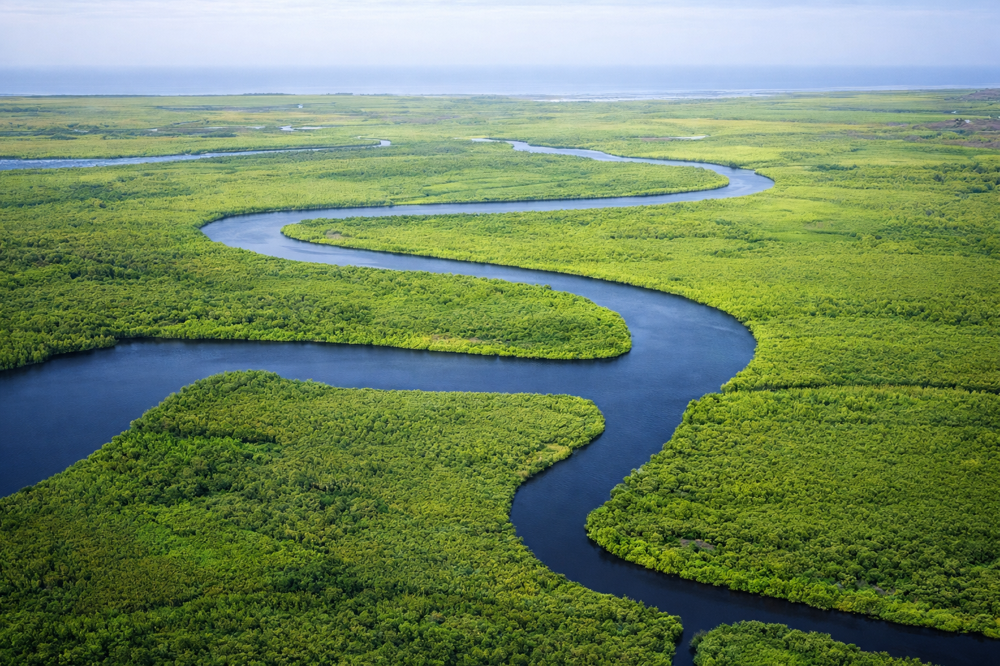

Fleuve Gambie
75k
Île de Kunta Kinteh
Site historique majeur lié à la traite (UNESCO)

RetourLa Côte Souriante de l'Afrique et les méandres du grand fleuve
La Gambie, le plus petit pays du continent africain, est une destination d'une richesse surprenante, surnommée "The Smiling Coast" pour l'accueil légendaire de ses habitants. Enclavée au cœur du Sénégal, elle s'étire le long du majestueux fleuve Gambie, véritable artère de vie. Entre les plages dorées de l'Atlantique, les forêts de mangroves abritant des centaines d'espèces d'oiseaux et les cercles mégalithiques mystérieux de Wassu, la Gambie offre une immersion totale entre nature et culture. De l'histoire poignante de Kunta Kinteh Island aux rituels sacrés du bassin aux crocodiles de Kachikally, chaque étape est une invitation à la découverte.
Explorez les 15 merveilles de la Côte Souriante
Site historique majeur lié à la traite (UNESCO)

Vestiges mégalithiques mystérieux et sacrés (UNESCO)

Bassin sacré aux crocodiles dociles, symbole de fertilité

Forêt côtière idéale pour observer les singes et les oiseaux

Le cœur battant du tourisme gambien, animation et farniente

Monument emblématique offrant une vue panoramique sur la capitale

Écotourisme entre mangrove, savane et traditions locales

Spectacle coloré du retour des pirogues et fumage du poisson

La plus ancienne réserve du pays, riche en reptiles et oiseaux

Paradis mondial pour l'observation des oiseaux en pirogue

Ville historique coloniale au cœur du fleuve Gambie

Sanctuaire de réhabilitation des chimpanzés en milieu sauvage
"Paradise Beach", calme, authentique et idéale pour le poisson grillé
Plages sauvages, mosquée sur le sable et projets écologiques
Le village natal de Kunta Kinteh, au cœur de l'histoire de Roots
L'harmonie de la Côte Souriante.
La Gambie est une mosaïque culturelle pacifique où se côtoient les Mandinka, les Wolof, les Fula et les Jola. Cette diversité s'exprime dans la musique Kora envoûtante, les danses énergiques et les rituels sacrés comme ceux du bassin Kachikally. L'histoire du pays est marquée par l'héritage colonial britannique et la lutte pour la liberté, immortalisée par le personnage de Kunta Kinteh. Aujourd'hui, la Gambie est fière de son identité "Souriante", offrant une hospitalité sans égale et une sérénité qui imprègne chaque village le long du fleuve.
L'instrument sacré des griots Mandinka, dont les cordes racontent l'histoire des ancêtres.
L'histoire de Kunta Kinteh qui a fait de la Gambie un lieu de pèlerinage pour la diaspora.
Les rituels de masques et les danses de récolte vibrantes de la Casamance gambienne.
Une culture du partage et du sourire qui a valu au pays son surnom international.

L'artisanat d'exception de la Gambie. Des batiks colorés aux sculptures en bois précieux.
 Artisanat
Artisanat
Vêtements et tableaux en batik teints à la cire avec des motifs traditionnels gambiens vibrants.
 Art
Art
Statuettes et masques finement sculptés représentant la faune et les symboles culturels de la région.
 Bio
Bio
Vannerie robuste et décorative tissée avec des fibres végétales naturelles de la vallée du fleuve.
Soin naturel pour la peau extrait artisanalement dans les villages de l'intérieur du pays.
Travail d'orfèvrerie délicat en argent, spécialité des bijoutiers de Serrekunda.
Huile pressée à froid issue des plantations côtières, idéale pour la cuisine et les soins.

Cape Point, Luxe

Fajara, Boutique & Vue Mer

Kololi, Iconique

Brufut, Intimité & Design

Makasutu, Eco-Luxe

Kololi, Convivial & Oiseaux
La cuisine gambienne est un régal pour les papilles, mettant à l'honneur les produits frais du fleuve et de l'océan Atlantique.
Version gambienne du riz Jollof, cuit en une seule marmite avec viandes et légumes.
Ragoût crémeux à base d'arachide servi avec du riz blanc, le plat préféré des locaux.
Poulet mariné au citron et oignons caramélisés, un délice fondant.
Un ragoût d'okra (gombo) riche en légumes verts, poissons et fruits de mer.
Riz mélangé avec du poisson fumé et des arachides pilées, très savoureux.
Poisson fraîchement pécé, grillé sur la plage avec une sauce épicée.
Bananes plantains mûres frites, servies chaudes pour le goûter.
Boisson onctueuse et vitaminée extraite du fruit du "arbre de vie".
Rafraîchissement national à base de fleurs d'hibiscus rouges.
Jus vert riche et original issu d'un fruit tropical local.
Pain traditionnel croustillant, idéal pour accompagner les sauces et omelettes.
Grosses crevettes grillées à l'ail et piment, une spécialité de côte.
Vivez le rythme de la Gambie à travers ses carnavals colorés et ses fêtes traditionnelles.
Grand défilé de masques (Zimba) et danses traditionnelles dans les rues de la capitale (Janvier).
Célébrations massives le 18 février avec défilés militaires et culturels à Banjul.
Festival biennal célébrant l'héritage africain et le retour à la terre natale (Juffureh).
La période idéale pour le tourisme. Le temps est sec et ensoleillé, avec des températures agréables grâce aux alizés. Parfait pour l'observation des oiseaux et les croisières sur le fleuve.
La nature devient incroyablement verte. C'est la période la plus chaude et humide. Quelques averses tropicales rafraîchissantes surviennent, surtout en août.
Pays très sûr. Attention aux "bumsters" sur les plages touristiques qui cherchent à offrir leurs services de guide avec insistance.
Traitement antipaludéen recommandé. Buvez exclusivement de l'eau en bouteille. Protection solaire indispensable.
Visa non requis pour de nombreux pays européens pour des séjours courts. Vérifiez les dernières réglementations avant le départ.
Le Dalasi (GMD). Le change est facile dans les zones touristiques. Les cartes bancaires sont acceptées dans les grands hôtels.
Expert Ornithologue
Lamin est l'un des meilleurs guides pour identifier les centaines d'espèces d'oiseaux le long du fleuve Gambie.
Experte Histoire & Patrimoine
Spécialiste de l'île de Kunta Kinteh, Isatou vous fera revivre l'histoire profonde et émouvante de son peuple.
Guide Écotourisme & Fleuve
Expert des méandres du fleuve et de la forêt de Makasutu, Mustapha vous guidera vers les spots les plus sauvages.